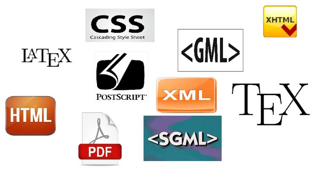

Un "lenguaje de marcas" es un modo de codificar un documento donde, junto con el texto, se incorporan etiquetas, marcas o anotaciones con información adicional relativa a la estructura del texto o su formato de presentación. Permiten hacer explícita la estructura de un documento, su contenido semántico o cualquier otra información lingüística o extralingüística que se quiera hacer patente.
UA1. Los lenguajes de marcas
2. El lenguaje de marcas
Ejemplo
Aspecto de un documento realizado con un lenguaje de marcas:
<carta>
<fecha>22/11/2015</fecha>
<presentacion>Estimado cliente:</presentacion>
<contenido>bla bla bla bla …</contenido>
<firma>Don Jose Gutiérrez González</firma>
</carta>
Aunque en la práctica, en un mismo documento pueden combinarse varios tipos diferentes de lenguajes de marca, éstos se pueden clasificar como sigue:
- De presentación: define el formato del texto.
- De procedimientos: orientado también a la presentación pero, en este caso, el programa que representa el documento debe interpretar el código en el mismo orden en que aparece. HTML es un lenguaje de este tipo.
- Descriptivo o semántico: describen las diferentes partes en las que se estructura el documento pero sin especificar cómo deben representarse. Por ejemplo, XML.
Algunos ejemplos de lenguajes de marca agrupados por su ámbito de utilización son:
- Documentación electrónica:
- RTF (Rich Text Format): formato de Texto Enriquecido, fue desarrollado por Microsoft en 1987. Permite el intercambio de documentos de texto entre distintos procesadores de texto.
- TeX: su objetivo es la creación de ecuaciones matemáticas complejas.
- Wikitexto: permite la creación de páginas wiki en servidores preparados para soportar este lenguaje.
- DocBook: permite generar documentos separando la estructura lógica del documento de su formato. De este modo, dichos documentos, pueden publicarse en diferentes formatos sin necesidad de realizar modificaciones en el documento original.
- Tecnologías de internet:
- HTML, XHTML: (Hypertext Markup Language, eXtensible Hypertext Markup Language): Su objetivo es la creación de páginas web.
- RSS: Permite la difusión de contenidos web
- Otros lenguajes especializados:
- MathML (Mathematical Markup Language): su objetivo es expresar el formalismo matemático de tal modo que pueda ser entendido por distintos sistemas y aplicaciones.
- VoiceXML (Voice Extended Markup Language) tiene como objetivo el intercambio de información entre un usuario y una aplicación con capacidad de reconocimiento de habla.
- MusicXML: permite el intercambio de partituras entre distintos editores de partituras.
Reflexión
¿Sabías que procesadores de textos como Word o Writer usan un lenguaje de marcas para almacenar el contenido del documento generado?
¿Sabías que Word o Writer usan un lenguaje de marcas para almacenar el contenido del documento generado?
Todos conocemos la extensión de archivo TXT como la de un archivo de texto plano, es decir, sin formatos ni florituras. Pero, ¿cómo la extensión DOCX de Word o ODT de Writer, siendo también de texto, pueden almacenar el contenido que escribimos junto con el formato que aplicamos?
Obra publicada con Licencia Creative Commons Reconocimiento Compartir igual 4.0